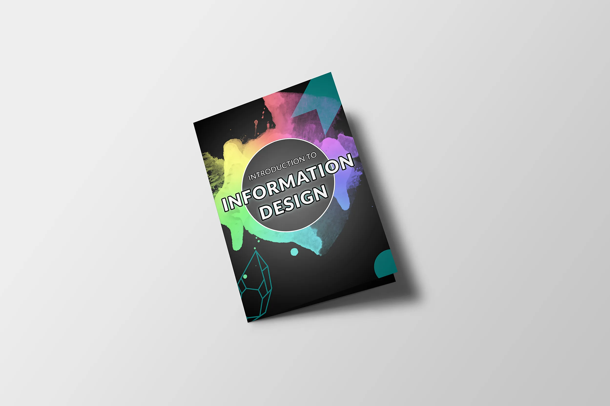
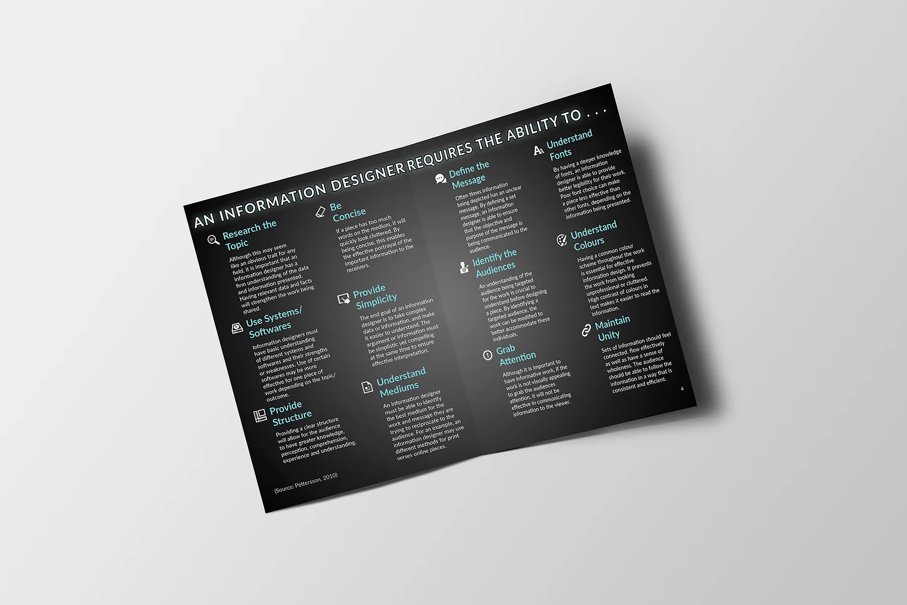
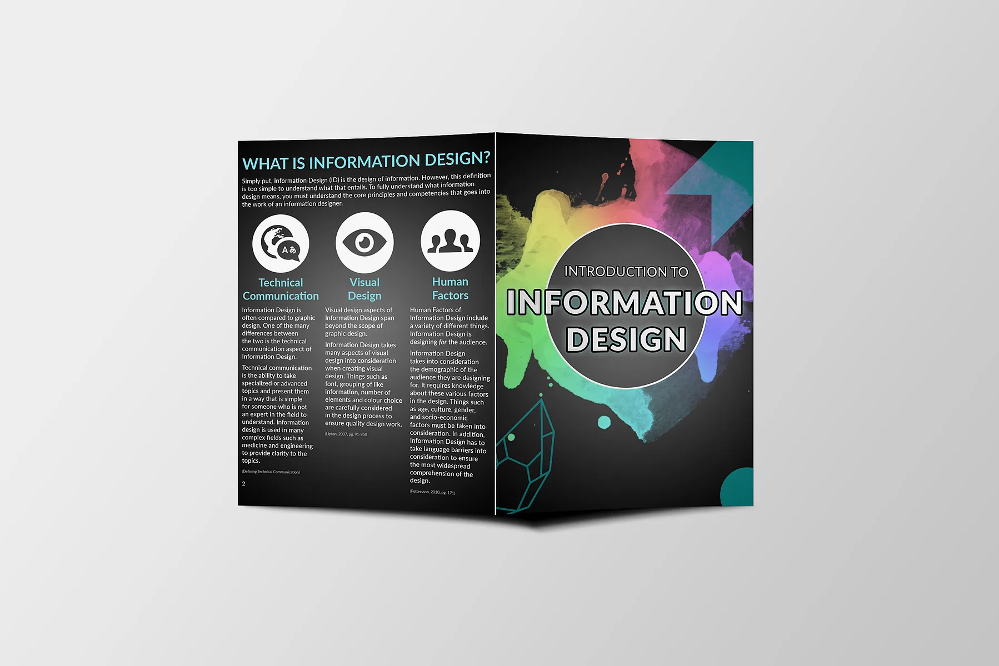

Introduction to Information Design
Background
As part of the Information Design program at Mount Royal University, one of my first projects was an introduction to information design. The objective of this project was to understand the principles and practices of information design and apply them to a real-world design problem. This project provided me with an opportunity to develop a strong foundation in information design and explore various design techniques.
Challenge
The challenge for this project was to create an information graphic that explained what information design is and its significance in today's world. The graphic had to be visually appealing and easy to understand, even for individuals who were not familiar with the subject matter.
Solution
To address the challenge, I began by conducting research on information design and its principles. I gathered information from reputable sources and organized it in a way that made sense to me. Next, I created a rough sketch of the information graphic, identifying the key elements and layout. I then created a digital design using Adobe InDesign, incorporating various design elements, such as colour, typography, and icons, to enhance the visual appeal and readability of the graphic.
The final information graphic was a comprehensive visual representation of what information design is, including its definition, history, principles, and significance. The design used a combination of colour, typography, and icons to convey information in a way that was easy to understand and engaging. The layout was structured logically, and the design was visually appealing, making it an effective tool for communicating information about information design.


Outcome
Through this project, I gained a strong understanding of the principles and practices of information design, including the importance of research, planning, and design thinking. I also learned how to use design tools such as Adobe InDesign and developed my skills in typography, colour theory, and iconography. This project helped me to develop a design mindset and approach, which I have continued to refine and apply to subsequent design projects. Overall, this project was an excellent introduction to information design, and it provided me with valuable skills and experience that will be beneficial throughout my academic and professional career.
References
- Defining Technical Communication. (n.d.). stc.org
- Katz, J. (2012). Designing information: Human factors and common sense in information design.
- Lipton, R. (2007). The practical guide to information design. Hoboken, N.J: Wiley.
- Pettersson, R. (2010). Information Design-Principles and Guidelines. Journal of Visual Literacy, 29(2), 167–182. doi.org/10.1080/23796529.2010.11674679
- Pope-Ruark, R. et al. (2019). Introduction to Special Issue: Design-Thinking Approaches in Technical and Professional Communication. Journal of Business and Technical Communication, 33(4), 370–375. doi.org/10.1177/1050651919854054